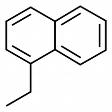

Parametrization of a new small molecule using Bartender
Contributed by: @rmera, @ricalessandri, @csbrasnett.
In case of issues, please contact Raul Mera A. or open an issue on the repo.Summary
Introduction
In this tutorial, we will discuss how to build a Martini 3 topology for a new small molecule using a semi-automated method based on semi-empirical quantum mechnical (QM) data with the Bartender package [1]. This tutorial builds on ideas and techniques discussed in the classic Small Molecule Parameterization tutorial [2,3], and it is recommended that you do that tutorial before this one.
As before, we will use as an example the molecule 1-ethylnaphthalene (Fig. 1). Files for Bartender can be obtained here.

1. Using Bartender to obtain bonded parameters for a small molecule
Bartender is a program aimed at obtaining bonded parameters for Martini models while bypassing the atomistic force field development and simulation step. It does so by relying on (semi-empirical) quantum chemical calculations. Specifically, Bartender makes extensive use of the GFN family of methods from the Grimme group, implemented in their xtb program. If you use Bartender in your research we ask you to cite the relevant GFN papers [13].
Hence, Bartender can replace steps 1, 3, and 5 of the classic Small Molecule Parameterization tutorial.
1.1 Installing Bartender
To install Bartender, first uncompress the m3_bartender.zip provided in the Introduction and access the .tgz file inside. Uncompress the .tgz file into a directory and set the BTROOT environment variable to point to that directory. Optionally, you can add BTROOT to PATH.
Let us go through this installation process. Say your home directory is /home/alfred, and you have the Bartender .tgz file in that folder (you can find the .tgz file among the downloaded files). Switch to that directory:
cd /home/alfredCreate a bartender directory and move the Bartender .tgz file there:
mkdir bartendermv bartenderX.Y.Z.tgz bartender/Where X.Y.Z is the version number for your binary. Now enter the bartender directory and uncompress the binary:
cd bartendertar xvzf bartenderX.Y.Z.tgzGo back to the home directory and define the required environment variables. If you are using the Bash shell, that would be:
cd echo "export BTROOT=/home/alfred/bartender" >> .bashrcecho "source $BTROOT/bartender_config.sh" >> .bashrcNow use:
source .bashrcand Bartender is ready to use.
1.2 Preparing Bartender input files
In the following step you will need the bartender python script, and a few input files. You can find the necessary input files in the m3_bartender.zip file you downloaded in the previous step!
Bartender requires an input file and a geometry file.
The input file tells Bartender two things:
- the atom-to-bead mapping - see step 2 of the classic tutorial;
- the bonded terms you want to obtain - see step 5.1 of the classic tutorial.
The syntax of the Bartender input file is fairly simple, but we provide a script to automatically generate it from existing .itp and .ndx files. The .itp needs to contain the bonded terms, although, of course, you can assign any nonsensical value you want to each of the required constants. The ndx file contains the atom-to-bead mapping. Issuing the command (note that script requires python3, of course!):
python3 ./write_bartender_inp.py --ndx ENAP_oplsaaTOcg_cgbuilder.ndx --itp ENAP_blank.itp --out ENAP_bartender.inpwill produce the required ENAP_bartender.inp input file. Notice that gmx2bar also asks for the number of atoms in the geometry file (24, in this case).
For the geometry file, Bartender supports the .pdb, .gro, and .xyz formats. Unfortunately, the LigParGen server generates non-standard .pdb files which Bartender cannot read. The easiest way to proceed is to transform these non-standard .pdb files into simpler .xyz files. This conversion is easy to do with a text editor that supports column selection, but you can also issue the command:
awk 'BEGIN{COORDS="";NATOMS=0};NF==8{ COORDS=COORDS substr($3,1,1)" "$6" "$7" "$8"\n";NATOMS++}END{print NATOMS"\n\n"COORDS }' ENAP_LigParGen.pdb > ENAP.xyzwhich calls the Unix utility awk and casts the non-standard ~ file onto an .xyx file. We now have everything Bartender needs!
1.3 Running Bartender
Bartender has many optional flags, but it is designed so they are rarely needed. Here, we can just use the basic command: bartender geometry.pdb/.gro/.xyz bartender_input.inp, which, in our case, will be:
bartender ENAP.xyz ENAP_bartender.inp1.4 Analyzing the resulting files
After a short wait (3-10 minutes depending on your CPU(s)), Bartender has produced several files, among which:
- A
gmx_out.itpfile: This is the topology file we were after, with the bonded parameters. - A series of
.pngfiles. These files contain plots of the actual distributions for each term and each fit (red triangles) and the corresponding fitted function (blue lines).
If we open the gmx_out.itp file, we will see that Bartender will have generated bonded parameters for all the bonds, constraints, and impropers terms we have in the topology.
It may be instructive to investigate how the results obtained from this parameterization differ from those obtained using atomistic simulation data - LigParGen in the classic tutorial or SwissParam in the Fast Forward tutorial - as a reference.
Tools and scripts used in this tutorial
GROMACS(http://www.gromacs.org/)Bartender(downloadable here)
References
[1] G.P. Pereira, et al., J. Chem. Theory Comput. 2024, 20, 5763.
[2] P.C.T. Souza, et al., Nat. Methods 2021, 18, 382–388.
[3] R. Alessandri, et al., Adv. Theory Simul. 2022, 5, 2100391..
[4] [General reference] C. Bannwarth, et al., WIRES Comput. Mol. Sci. 2021, 11, e1493DOI. [Solvation model] S. Ehlert, et al., J. Chem. Theory Comput. 2021, 17, 4250–4261. [GFN2-xTB] C. Bannwarth, et al., J. Chem. Theory. Comput. 2019, 15, 1652-1671. [GFNFF] S. Spicher and S. Grimme, Ang. Chem. Int. Ed. 2020, 59, 15665-15673.